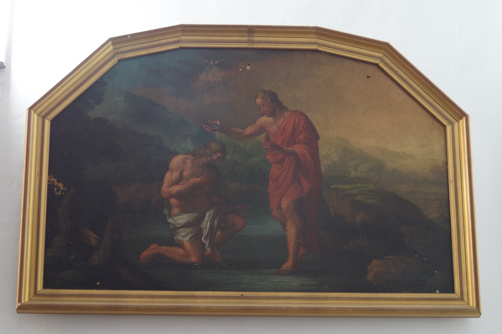

Aquest quadre representa el baptisme de Jesús per sant Joan Baptista al riu Jordà. Jesús hi apareix agenollat dins l’aigua, mentre Joan li n’aboca sobre el cap amb una copinya. A la part superior es representa l’Esperit Sant en forma de colom, del qual irradien rajos de glòria, seguint la narració que fa l’evangeli de sant Lluc d’aquest episodi.